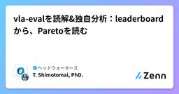
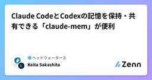
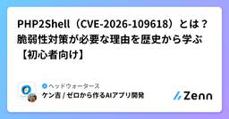
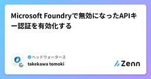

ヘッドウォータースのフィード
https://zenn.dev/p/headwaters
株式会社ヘッドウォータースのテックブログです。 AIエージェント、生成AI、Azure、GitHub Copilot、IoT、XR系などData&AIとApp modernizeに関して幅広く投稿します！
フィード

【Zenn力執筆】#14 See（C）してもらえて、はじめてサイト。
ヘッドウォータースのフィード
はじめにみなさんは嫌いなアルファベットはありますか。私は「C」が嫌いです。Cを見るたびに視力の衰えを感じます。マンチェスター・シティは大好きです（笑）。話は変わりますが、視力検査のたびに見る、あの「C」の形をしたマークが書かれた機器の名前を知っている人はいますか。あれはランドルト環といいます。ランドルト環：視力検査で使われる、一か所だけ切れ目のある輪っか。スイスの眼科医エドムント・ランドルト（1846〜1926年）が開発し、彼の名前がそのまま名称になりました[1]。切れ目の向きを見分けられるかどうかで視力を測ります。国際的に定められた視力表にも使われていて[2]、輪の...
2日前

vla-evalを読解&独自分析：leaderboardから、Paretoを読む
ヘッドウォータースのフィード
VLAを評価する論文は増えましたが、「どのモデルを使うか」「どの指標を見ればよいか」は分かりにくいままです。本稿は、まず評価ツール vla-eval の論文 [1] を紹介し、次にそのleaderboardの公表値を使った独自分析から、指標の選び方とモデルの候補を考えます。たくさんの解があるとすると、複数の指標・評価値があったときに２次元なら散布図をプロットできます。Pareto（パレート）解というのは知らない人もいるかもしれません。簡単に言うと散布図の中で良い側の端っこの方にある解(点)のことと考えてください。どれか一つの評価値を良くしようとすると、他の評価値が悪くなってしまうような...
3日前

Claude CodeとCodexの記憶を保持・共有できる「claude-mem」が便利
ヘッドウォータースのフィード
Claude CodeやCodexを使っていて、セッションが変わるたびに過去の作業内容を説明するのが面倒だったので、claude-memを導入してみました。claude-mem 公式GitHub claude-memとは？AIコーディングエージェントに長期記憶を持たせるOSSプラグインです。主な特徴はこちら。自動記憶：作業履歴や設計判断をAIが要約して保存永続化：SQLiteなどに記憶を保存し、セッションをまたいで利用自動想起：新しいセッションで過去の関連情報を読み込み記憶の共有：Claude CodeとCodexなど、複数のAI間で記憶を共有トークン節約...
4日前

PHP2Shell（CVE-2026-109618）とは？脆弱性対策が必要な理由を歴史から学ぶ【初心者向け】
ヘッドウォータースのフィード
この記事でわかること話題になった PHP2Shell が、何がどう問題なのか脆弱性対策が、なぜ「必須」と言われるのか1988年から現在まで、脆弱性対策の仕組みがどう変わってきたのかAIやSNSの普及で、対策に残された時間がなぜ短くなっているのか明日から自分のチームでできる、5つの基本 まずは要点から脆弱性の被害は、「見つかったこと」より 「直されなかったこと」 で広がってきた歴史を振り返ると、毎回「修正版が出てから適用されるまでの 時間差 」が勝負を分けているAIとSNSの普及で、この時間差はさらに縮まっているPHP2Shellは、その全部が重なった最新の...
5日前

Microsoft Foundryで無効になったAPIキー認証を有効化する
ヘッドウォータースのフィード
執筆日2026/10/27 はじめにMicrosoft Foundryのプロジェクトを使ってLLMをコードで実行しようとした際に、ポータルを開いたところ、キーが表示されない。Foundryリソースのキー認証（ローカル認証）が無効化されているので、キーを有効化にする手順をまとめようかなと。 ポータルのGUIでは変更できない最初はAzureポータルの画面から切り替えようとしましたが、公式ドキュメントを確認した限り、AzureポータルにもFoundryポータルにもGUIでキー認証（ローカル認証）を有効に切り替える項目はありません。Microsoft Docsによると変更方...
6日前

Azure OpenAI Decisions APIとは？
ヘッドウォータースのフィード
執筆日2026/10/26 概要Decisions APIは、テキストや画像（またはその両方）を評価し、生成文ではなく型の決まった回答を返すAPIです。条件の真偽判定、固定の選択肢からの選択、コンテンツ分類、リクエストのルーティング、作業の優先順位付けなどに使えます。エンドポイントは/openai/v1/decisionsで、OpenAI SDKまたはRESTから呼び出します。現時点で対応モデルはgpt-6-lunaのみです。Azure OpenAI Decisionsというモデルがあるわけではありません。 前提条件gpt-6-lunaのデプロイが必要です。認...
7日前

Decision-1で作る、会話リアルタイムアドバイザー
ヘッドウォータースのフィード
https://youtu.be/N0hiIV8RNBg 作ったものMTG中に相手の話を聞きながら、「いま、この質問をすると良い」「この数字を伝えると良い」を、そっと提案するデモアプリを作りました。提案のもとは、事前に用意した質問と共有事項です。マーケットレポートから自動で作ります雑談には反応せず、関連する話題が出たときだけ、質問か共有事項の提案が出ます提案を開くと、レポートのグラフ、示唆、引用、未確定事項が同じ場所に開きますDecision-1が何を判定したかは、確率の棒グラフとリクエスト／レスポンスで確認できます判定にはMicrosoft FoundryのDeci...
8日前
Microsoft Graph APIでOutlookのメールを取得する
ヘッドウォータースのフィード
調査日2026-10-24 概要Microsoft Graph API（v1.0）で Outlook（Exchange Online）のメールを Python から取得する方法を調査しようかなと。 参考記事https://learn.microsoft.com/ja-jp/graph/api/resources/message?view=graph-rest-1.0https://learn.microsoft.com/ja-jp/graph/api/message-get?view=graph-rest-1.0&tabs=http アプリ登録Mic...
9日前
モデルの重みは一切触らずにエージェントを「自己改善」させるRSIAgentの設計を読み、LangGraphで再現してみた
ヘッドウォータースのフィード
モデルを再学習せずに「経験」だけを蓄積するRSIAgent（論文、2026年9月15日のHugging Face Daily Papersは、モデルのパラメータを一切更新せずに、新しい環境での立ち回りを自己改善していくフレームワークです。名前の通り "Recursive Self-improvement"（再帰的自己改善）を、ファインチューニングなしで実現しようとしています。普通、エージェントを「賢くする」といえばファインチューニングや強化学習で重みを更新することを指しますが、RSIAgentがやっているのはそれとは別のアプローチです。探索して得た経験を、永続的なメモリに手順・ス...
10日前
Microsoft Foundry の評価で、正答と誤答をどう採点するか試してみた
ヘッドウォータースのフィード
執筆日2026/10/22 参考資料Microsoft Foundry でのクラウド評価の概要データセットを使ってクラウド評価を実行する評価結果を取得する評価に必要なアクセス許可評価のリージョン、制限、仮想ネットワークazure-ai-evaluation の F1 スコア実装（GitHub） 検証内容質問、回答、正解を手書きしたデータセットを登録し、その回答をそのまま採点しました。3件のうち1件はわざと誤答にしてあります。各エバリュエーターが正答と誤答をどう採点するか、行ごとのスコア、合否、理由を確認しました。 検証環境モデル: gpt-6.1-...
11日前
VLAの安全は外側で守れるか：ハーネスと安全機構の論文
ヘッドウォータースのフィード
最近、PhysicalAI（現実の世界で動くAI）が注目されています。その中心にあるVLA（画像と言語指示から、ロボットの行動を直接出すモデル）は、柔軟な作業をこなせる一方で、出力が常に安全とは限りません。実環境、とくに人と同じ空間で動く製造現場で使うには、モデルの外側で補助し、安全を確かめる仕組みが要ります。このブログでは、VLAの外側に付け加え、実行の制御・補助・安全の確認を担う仕組みを「ハーネス」と呼びます。2026年に入り、こうした仕組みを扱う論文が相次いで公開されています。つまり、VLAは「何をしたいか」を決める知能として使い、最終的に「その動きを本当に実行してよいか」は...
11日前
ビジネスロジックはどこに書くべきか？ ドメインモデル貧血症とファットモデルを解説
ヘッドウォータースのフィード
よくある設計の悩みWebアプリケーションを開発していると、Modelには何を書くべきなのか？Serviceには何を書くべきなのか？ビジネスロジックはどこに置くべきなのか？と悩むことがあります。例えば、if user.total_purchase_amount >= 100000: user.rank = "Gold"という会員ランクの判定処理があるとします。このロジックは、Userモデルに書くべきなのか？UserServiceに書くべきなのか？どちらがよいのでしょうか。実は、この問題に対する考え方は一つではありません。Modelをデー...
12日前
どこに何を書くべき？レイヤードアーキテクチャの基本を解説
ヘッドウォータースのフィード
Webアプリケーション開発では、ControllerServiceRepositoryModelなど、さまざまなコンポーネントがあります。しかし、なぜ分けて実装するのか？どこに何を書くべきか？が分からず、迷ってしまうことも少なくありません。そこでよく利用される設計手法がレイヤードアーキテクチャです。この記事では、レイヤードアーキテクチャの概要と各レイヤーの役割を解説します。 レイヤードアーキテクチャとはレイヤードアーキテクチャとは、アプリケーションを役割ごとに層（レイヤー）へ分割する設計手法です。代表的な構成は次のようになります。UI ↓プレ...
12日前
Microsoft Agent 365 管理ガイド
ヘッドウォータースのフィード
はじめにMicrosoft Agent365は、組織内のAIエージェントの台帳・権限・活動・リスクを、ひとつの管理面にまとめるための仕組みです。ただ、実際に導入を考えると、次のような点で迷います。M365管理センター・Entra・Purview・Defender のどこで何をするのかAI管理者・ID管理者・セキュリティ担当・業務部門の誰が担当するのか公開から廃止までの間、日々どの画面を見ればよいのかこの記事では、管理画面のイメージを使って「誰が・何を・どの画面で管理するか」を整理します。!記事中の画面はイメージです。 Microsoft Learn の公開情報（2...
13日前
1年以上前に作った自律開発AIエージェントを見返したら、昔の僕が健気で天才だった
ヘッドウォータースのフィード
はじめに：GitHubの奥底から発掘されたコード最近、ふとGitHubの自分のリポジトリ一覧を眺めていて、あるリポジトリに目が止まった。リポジトリ名は ai-developer。https://github.com/yuma-seno/ai-developerファーストコミットの日付は 2025年6月15日。実際の開発自体はその数ヶ月前（2025年の初頭〜春あたり）からガリガリ進めていたものだ。今でこそ Claude Code が日常の相棒になり、MCP（Model Context Protocol）が普及し、ターミナルでエージェントが勝手にコードを書いてビルドを通す世界...
13日前
同じ CSV を4つの方法で Lakehouse に入れてみる：Copy job・パイプライン・Dataflow Gen2・Notebook
ヘッドウォータースのフィード
この記事で分かることMicrosoft Fabric の Lakehouse（レイクハウス）にデータをコピーして取り込む代表的な方法は、いまは4つです。Copy job・パイプライン・Dataflow Gen2・Notebook です。ほかにも、ファイルのアップロード、ショートカット、Eventstream といった入れ方があります。同じ CSV をこの4つで Lakehouse のテーブルに入れ、次の3点を比べました。作るときに何を決めるか2回流したら行数はどうなるか（追加か、上書きか）ワークスペースに何が増えるか結論を先に書きます。加工せずに運ぶだけなら、...
13日前
Azure API Center - プランの変更方法
ヘッドウォータースのフィード
執筆日2026/10/17 備忘録として残します 手順Azure API Centerを開く概要>Manage planをクリック変更プランを選択し、送信をクリック
16日前
arXiv・GitHub・Hacker Newsの新着を、LLMなしで「読む／見送り」に自動仕分けする（Python × Jev）
ヘッドウォータースのフィード
論文の新着は1日80件超：読むものを自動で選ぶツールを作るarXivの新着一覧（cs.AI・cs.CL）を見ると、新規投稿の論文は、2026-10-12付の cs.AI で83件、2026-10-09付の cs.CL で88件ありました。1つの分野だけで、1日に80件を超えます。要旨を1件30秒で読むとしても、83件で約40分かかります。そこで、技術論文の新着を取得し、GitHubとHacker Newsの新着も加えて、Jevに「自分に関係があるか」「実務で使えそうか」を判定させ、自分が読むべきものだけを選ぶツールを作ります。コマンドを1つ実行すると、次のようなダイジェスト（Ma...
17日前
VLAのベンチマークまとめ：標準シミュレーションから頑健性・記憶・安全・実機・産業まで
ヘッドウォータースのフィード
概要ロボットは機体、カメラ、制御方式が異なるため、同じ条件での比較が難しい分野です。近年は物理シミュレータや公開評価基盤が整い、ロボットのためのモデルであるVision-Language-Action（VLA）モデルを共通条件で評価する研究が増えています。本稿では、VLAに関係するベンチマークを、対応論文・評価対象・環境の観点から整理します。さらに、標準ベンチマークの高い成功率だけでモデルの実力を判断できるのかを、頑健性・言語・回復・記憶・安全・実機評価から検討します。各表では、ベンチマークを提案または主に使用した論文、対象ドメイン、評価内容、シミュレータ・実機環境を示します。...
17日前
【エンジニア1年目向け】Docker入門 ～イメージ・コンテナ・Docker Composeの基本を徹底解説～
ヘッドウォータースのフィード
開発現場で、ほぼ必須と言っていいほど利用されているのが Docker です。初めて触れると、Dockerって何？仮想マシンと何が違うの？イメージとコンテナって何？docker-composeって何のためにあるの？と疑問だらけだと思います。この記事では Docker の基本から実際の開発で使うコマンドまで解説します。 DockerとはDockerは、アプリケーションを動かすための環境をまとめてパッケージ化し、どこでも同じように実行できるようにする技術です。例えば、開発者AのPC├─ Python 3.12├─ Flask└─ PostgreSQL...
18日前